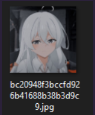

Theory
The purpose of this artifact is to analyze the previews that we see in the file explorer when we want to open a file. For example, we can see previews of images or PDFs as it can be seen there : 
A database file containing the preview exists for each user that already logged on the system.
Thumbs.db
Created for Windows Vista, not used anymore.
Thumbcache_<resolution>.db
These are the actual artifact files that can be found and investigated on modern systems.
Path : C:\Users\<username>\AppData\Local\Microsoft\Windows\Explorer
Thumbcache IDs and hashes are stored in the Thumbcache database and can be used to map the path of the source images; this is usually done by scanning files across the same source system and comparing the hashses or via matching the System.ThumbnailCacheId with the Windows Search (Windows.edb) database
==Thumbnails can be useful for identification of files no longer present on the system as they stay there even when the file is deleted.==
Summary
![[Pasted image 20230606190356.png]]
Analysis
Thumbnails can be analyzed with the following tool https://thumbcacheviewer.github.io/
After browing to the artifact directory : `C:\Users\Anthony\AppData\Local\Microsoft\Windows\Explorer`, we can see that a lot of DB files are present. Between all of them, we can see that some have higher size than the others. These will contain more cached images. However, the number depends on the original resolution of the images. All of them might be worth to inspect to have a complete overview of what Thumbnails images have been cached.
![[Pasted image 20230606184231.png]]
Let’s open the bigger one in Thumbcache viewer (thumbcache_96.db)
Once opened in Thumbcache viewer, we have a list of all the cached images of that size with random names.
![[Pasted image 20230606184833.png]]
However, by clicking on them, we can see all the images, even the first image I put there :D
![[Pasted image 20230606184909.png]]
It is now possible to save this image as an IoC if we for example saw the icon of Mimikatz.
![[Pasted image 20230606185037.png]]
But now, how do we know the original file path location?
As stated before, metadata related to the Thumbnail image are stored within the Thumbcache database. These can be used to sometimes retrieve the original path of the image.
Thumbcache viewer is again capable of doing it for us.
Let’s click on Tools and then Map File Paths
![[Pasted image 20230606185247.png]]
There, we need to chose which path is going to be scanned to map the cached image with the original image. There, I choose my most used disk.
![[Pasted image 20230606185354.png]]
7 files were mapped correctly with the content present on the disk. ![[Pasted image 20230606185449.png]] Now, we can see what was the original name of the first picture : ![[Pasted image 20230606185519.png]] Of course, this File mapping option won’t work if the files are not present anymore on the disk due to the way it works with comparating the hashes of the files within the folders with the hashes of the tumbnail files.